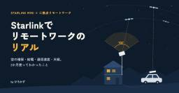
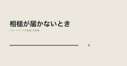

CloudNative BLOGs
https://blog.cloudnative.co.jp
株式会社クラウドネイティブの技術ブログ。ゼロトラスト、SaaS、AI、セキュリティなどの最新情報をお届けします。
フィード
#BTCONJP 2026 Day1 スポンサーとして参加してきました！【イベントレポ】
CloudNative BLOGs
BTCONJP 2026にダイヤモンドスポンサーとして参加しました！CPU・GPUなどのキーホルダーや情シス無料相談会、情シス大陸の企画、シンジの登壇、懇親会など、Day1の様子をレポートします。
1日前

Starlinkでリモートワークのリアル 1
1
CloudNative BLOGs
Starlink Mini（ポータブルプラン - 無制限）を二拠点のリモートワークで活用した実例を紹介します。空の視野確保や給電の難所、設置方法、通信速度・安定性、天候の影響を解説し、光回線や携帯電波が弱い場所での導入を検討する方に役立つ内容です。
1日前

Google Workspace公式MCPで何ができる？ 情シスでの使い方と注意点
CloudNative BLOGs
Google Workspaceの公式MCPが一般提供になり、AIアプリからGmailやDriveの情報を探したり、文書や予定を更新したりできるようになりました。情シス業務での使い方を例に、接続先に渡るデータ、許可する操作、承認・監査、利用枠まで、社内で使う前に確認したい点を整理します。
1日前

相槌が届かないとき：非言語コミュニケーションから見るリモートワークの同期と非同期
CloudNative BLOGs
リモートワークで薄くなるのは会話の量だけではない。相槌、視線、距離、返事までの時間が媒体ごとに落ち、届いた記録の下で意味が欠ける。同期と非同期の使い分けを、どの非言語を残し、どのロスを言葉で防ぐかという設計として整理する。
1日前

誰もダウンロードしていないのに、Boxの月間帯域が尽きる
CloudNative BLOGs
少人数でBoxを使っていると、誰も保存を押していないのに月間の転送上限へ届くことがある。原因はBox Driveが、Windows Searchのインデックスやサムネイル、セキュリティスキャンの読み取りに応じてファイルを取得し、キャッシュが消えるたびに同じ転送をやり直すことにある。
1日前

Netskopeから「Storage Constraints API v1 to v2 Migration」の通知が来たら。対象かどうかは3ステップで確認しよう
CloudNative BLOGs
Netskopeから届いた「Storage Constraints API v1 to v2 Migration」の通知を解説。通知は全顧客向けで、受信＝影響ありではありません。v1 トークン・ストレージ制約プロファイル・呼び出し元の3ステップで対象かどうかをフローチャートで振り分け、対象だった場合の対応をまとめます。
3日前

営業からPMへの転職は、ジョブチェンジじゃなかったかもしれない（3）「変数が多くて難しい」の正体
CloudNative BLOGs
営業とPMの違いを探して、三つ目の仮説をたどります。営業にも状態管理はあったという気づきと、追うべき状態の全てが成果に直結しているかどうかという違いから、「PMは変数が多くて難しい」を自分の言葉で言い直そうとする連載の第3回です。
3日前

Aurascape Client を自動で最新バージョンに更新する設定
CloudNative BLOGs
Aurascape Client を自動で最新バージョンに更新する方法を解説します。管理コンソールの Client Updates で Target Version・Rollout Method・Update Behavior を設定する手順と、更新後の確認方法、Intune で配布している場合の注意点をまとめました。
5日前

Intune で Aurascape Client を Windows 端末に配布する方法
CloudNative BLOGs
Intune の Win32 アプリを使って、Windows 端末に Aurascape Client を配布する方法を解説します。プロビジョニングコードの取得から intunewin 化、Intune への登録、動作確認までの手順に加え、アプリが更新されても困らない検出規則とアンインストールの設定をまとめました。
5日前

UPN は変わる。ユーザーを紐づけるキーには「変わらない ID」を ― AD／Entra ID の公式ドキュメントで確かめた
CloudNative BLOGs
UPNは氏名変更や組織再編で変わることがあります。ユーザーの紐づけにUPNを使うリスクと、ADのobjectGUID、Entra ConnectのsourceAnchor、Entra IDのオブジェクトIDの役割や注意点を、Microsoftの公式ドキュメントをもとに整理します。
8日前
今さら聞けない検知と対応の略語｜EDR・SIEM・SOAR・SOC・MDRを新人向けに整理【2026】
CloudNative BLOGs
EDR・SIEM・SOAR・SOC・MDRの5語を、端末を見張る・記録を集めて動かす・検知と対応を担うという役割で整理します。アンチウイルスとEDR、SIEMとSOARなど紛らわしい違いもNISTやGartnerの一次情報で確認できる、新人向けのリファレンス記事です。
8日前
AIエージェントとサクッと作る、PDFドキュメントのレシピ
CloudNative BLOGs
手順書や報告書などのPDFドキュメントを、AIエージェントと一緒に作る流れを紹介します。作業の履歴から本文を作り、QuartoとTypstのテンプレートで整え、PDFに書いたコメントで直し、画面の画像を用意するまでの4つのステップをまとめました。
8日前
AurascapeをMDMからmacOSに展開してみる
CloudNative BLOGs
AurascapeをJamf Pro・Iru・IntuneなどのMDMからmacOSへ展開する手順を、証明書やVPN、構成プロファイル、デプロイメントスクリプトの設定とともに解説します。企業のAI利用を安全に可視化・制御したい情シス担当者に役立つ実践ガイドです。
9日前
Aurascapeの管理者初回ログインまとめ
CloudNative BLOGs
Aurascapeの検証を開始しました。アカウント発行からメール認証、サインイン、追加の管理者アカウント追加まで、初回セットアップの流れとつまずきやすいポイントをご紹介します。
9日前
intunewin の検出規則に MSI 製品コードを使うな！
CloudNative BLOGs
Intune の Win32 アプリ (intunewin) で検出規則に MSI のプロダクトコードを使うと、アプリの自動アップデートでプロダクトコードが変わったときに、Intune が古いバージョンを入れ直してアプリがロールバックすることがあります。その仕組みと、代わりに実行ファイルで検出規則を構成する方法を解説します。
12日前
【Netskope】このFQDN、どのポリシーから見られてる？URL Lookupで一発確認
CloudNative BLOGs
NetskopeのURL Lookup（Skope IT > Tools > URL Lookup）は、URLやドメインを1件入れるだけで、属するカテゴリ（Predefined／Custom）と、そのURLが参照されているポリシー（Real-time Protection／SSL）を一覧で返すツールです。画面の場所と使い方、Dynamic URL Classification有効時の注意、まとめて引くためのURL Lookup APIの上限を、公式ドキュメントに基づいて整理します。移行で消せなくなったDestination Profileの参照元探しにも使えます。
15日前
地方からクラウドネイティブにジョインしました！！
CloudNative BLOGs
石川県からフルリモートでクラウドネイティブにジョインしたこーへが、これまでの経歴や入社後の気づき、これからの抱負を紹介します。
17日前
なぜ「AIを誰が使っているか」が見えなくなったのか
CloudNative BLOGs
AIが自分で外部のツールを呼ぶようになり、見るべき対象が「人が何を入力したか」から「AIが何をしたか」へ広がりました。可視化はID層・エンドポイント層・ネットワーク層の3つに分かれ、それぞれ見えるものが違います。このシリーズで何を実機で確かめるかを先に宣言します。
17日前
Entra ID で SOA を移管したら、Entra DS のパスワード ハッシュはどうなるか試してみた
CloudNative BLOGs
オンプレ AD から Entra ID へユーザーの SOA を移管すると、Entra Domain Services のパスワード ハッシュはどうなるのか。2 人のテスト ユーザーで、移管後の認証と、クラウドとオンプレそれぞれでのパスワード変更を検証しました。公開ドキュメントには明記されていない動作なので、検証後に Microsoft サポートへ確認した結果もあわせて紹介します。
18日前
少人数の経理に、もう1人の担い手を。AIを『第三者』にして振込の相互牽制をつくる
CloudNative BLOGs
少人数の経理では、振込の処理・確認・実行が同じ人に重なりがちです。AIを「人がやらない方の役」に置き、承認と実行は人に残して、記録はAIに任せる。人を増やさずに振込の相互牽制をつくる方法を、経理担当の実践から紹介します。
18日前
Entra Domain Services の信頼越しのアクセスが NTLM に落ちていたので、KFSO で Kerberos に戻した話
CloudNative BLOGs
Entra Domain Services とオンプレ AD の一方向フォレスト信頼で、ファイル共有へのアクセスが NTLM にフォールバック。クライアント側の Kerberos フォレスト検索順序を設定し、klist とイベント ID 4624 で Kerberos に戻ったことを確認する手順と、本番展開時の注意点を紹介します。
1ヶ月前
セキュリティチームで働いて1年たったよ！
CloudNative BLOGs
セキュリティチームに加わって1年。問い合わせの本質を考える姿勢、AIと向き合いながら挑戦したこと、子育てと両立するためのタスク管理を振り返ります。
18日前
NetskopeのURLリストを宛先プロファイルへ移行する。「複製」と「カテゴリ移行」の手順と注意点
CloudNative BLOGs
NetskopeのURLリスト画面に「URLリストは将来的に非推奨」のバナーと「宛先プロファイルに複製する」「カテゴリを移行する」ボタンが出るようになりました。2つのボタンは二択ではなく移行の2段階です。挙動が切り替わるのはどちらか、Longest Prefix Matchなど本番前に確認すべき差分、カテゴリ移行後にDuplicate Againで「新規」を選ぶと参照が移る実機確認結果、Destination Profile Evaluation APIでの確認方法、ロールバック手順を公式ドキュメントと検証環境の結果に基づいて整理します。
23日前
クラウドネイティブに入社しました〜AI時代を生き残れるマーケターを目指して〜
CloudNative BLOGs
クラウドネイティブに入社したマーケターのGotoが、AI時代に感じたキャリアの不安、転職の決め手、入社後の驚きとこれからの目標を紹介します。
1ヶ月前
CCSPに2回落ちて3度目で合格した勉強法と受験までの流れ
CloudNative BLOGs
CCSPに2回落ちて3度目で合格した記録です。問題集の暗記をやめ、CSAのセキュリティガイダンスV5と公式教科書を軸に切り替えた勉強法、独学と公式研修の費用比較、2025年10月のCAT移行と再受験ルールをまとめました。
1ヶ月前
ヒューマンエラーでの情報漏えいはこうして起こる | 生成AIエージェントを使う日常の落とし穴
CloudNative BLOGs
生成AIエージェントを日常業務で使うセキュリティ責任者が、チャットツールのダウンロード先設定を変えたことで、公表前の資料をリポジトリに混入させた実体験を振り返ります。原因とOWASP LLM06の観点、再発防止策を紹介します。
1ヶ月前
代表・シンジがファインディ様主催のログ基盤イベントに登壇しました！【イベントレポ】
CloudNative BLOGs
2026年10月22日に開催されたファインディ様主催のイベント「増え続けるログ、どこに置き、どこまで残すか」で、弊社代表の齊藤がAIエージェントのログ設計をテーマに登壇しました。その登壇レポートです。
1ヶ月前
今さら聞けないネットワークと通信の略語｜ゼロトラスト・VPN・ZTNA・SWG・FWaaS・SASE・SSEを新人向けに整理【2026】
CloudNative BLOGs
ゼロトラスト・VPN・ZTNA・SWG・FWaaS・SASE・SSEの7語を、考え方・つなぎ方・通信の検査・まとめ方の役割で整理します。VPNとZTNA、SASEとSSEなど紛らわしい違いもNISTやGartnerの一次情報で確認できる、新人向けのリファレンス記事です。
1ヶ月前
IdP導入の隠れたコスト、SSOとSCIMのために接続先SaaSのプランアップが必要になる話
CloudNative BLOGs
IdP のライセンス費用は予算に入っていても、SSO や SCIM の接続先になる SaaS 側で上位プランが必要になる分は抜けがちです。Slack、Notion、GitHub、Zoom、Atlassian、kintone の2026年10月時点の条件を確認しながら、プランアップを見送ると一部だけ SSO 化された状態で IdP が使われなくなる流れと、接続先の棚卸しと予算化の進め方を整理します。
1ヶ月前
退職・異動の権限は、どこまで自動で減らせるか。いまの環境から始めるID管理
CloudNative BLOGs
IdPでアカウントを止めても、SaaS側の退職・異動対応が終わったとは限りません。IdPでの無効化がSaaSにどこまで届くかで3つのパターンに整理し、SaaSごとに確認する4点と、残る操作を担当・期限付きで台帳に残す設計を情シス向けに解説します。
1ヶ月前
「完了しました」は証拠ではない。AIの報告と実際の件数を突き合わせる習慣
CloudNative BLOGs
AIに請求書の登録を任せたら「完了しました」と返ってきたのに、一部は登録されていませんでした。AIの報告は、AIが自分の作業を説明した文で、できた証拠ではありません。報告と実物がずれる4つの型と、できあがったものの側を数える3つの確かめ方を、数え直す範囲の絞り方とあわせて紹介します。
1ヶ月前
MDM導入は何から始める？製品選びの前にやりたい現状把握と目指す姿の定義
CloudNative BLOGs
MDM導入の情報収集を任された社内IT担当者向けに、製品を調べる前に進める手順を解説します。MDMの基本、課題と端末の状態を確かめる現状把握、課題ごとにやりたい操作を書き出す目指す姿の定義、IdPやEDRとの役割分担まで整理しています。
1ヶ月前
Macの使い捨てメモ、下書きエディタ環境をAntinoteに移した話
CloudNative BLOGs
Slack やメールの下書きを本文の入力欄の外で書くために、macOS 向けのスクラッチパッド Antinote を使い始めました。⌥A での即時起動、貼り付け時の書式落とし、スクリーンショットのローカル OCR といった機能が、下書き用途にそのまま刺さります。下書き専用エディタのエディ太郎をフォークして Swift で書き直していた経緯も含めて紹介します。
1ヶ月前
【Netskope】Browseでアラートが出ないのは仕様。それでもBlock前に影響を知りたい時どうする？
CloudNative BLOGs
BrowseをAlertにしてもSkope ITのAlertsには起票されません。Advanced AnalyticsのTransaction EventsをRTP Nameで抽出し、ユニークドメイン数・対象ユーザー数でBlock化の影響範囲を事前に把握する手順と、Do Not Decryptなど抽出に出てこない通信の注意点をまとめました。
1ヶ月前
「SCS評価制度への備え方」を開催しました！【CNイベントレポ】
CloudNative BLOGs
2026年10月16日に開催した「SCS評価制度への備え方」のイベントレポートです。3社のセッションと懇親会の様子、SCS評価制度 取得支援サービス、次回イベント（12月11日予定）をご紹介します。
1ヶ月前
Entra Domain Services の一方向フォレスト信頼で、オンプレ側のサーバーにログオンするまで
CloudNative BLOGs
Microsoft Entra Domain Services とオンプレミス AD の間に一方向フォレスト信頼を張り、Entra DS のユーザーでオンプレ側のサーバーにログオンするまでに、つまずいた点と注意点をまとめます。信頼の向き、DNS、信頼パスワード、ログオン権の付与、SIDHistory を許可する際の注意点を扱います。
1ヶ月前
シャドーAIを「技術的に」阻止する方法
CloudNative BLOGs
AIの利用ルールだけでは足りず、シャドーAIを技術的に制御する必要がある組織に向けて、エンドポイント・ID・IaaSとアプリ・ネットワークの4レイヤーで考え方を整理します。Netskope・Zscaler・Cato・Aurascapeなど国内外40製品を16軸で比べたマルバツ表付きです。
1ヶ月前
PHPの脆弱性のニュースを聞いて「利用しているSaaSは大丈夫？」と聞かれた情シスに伝えたい経営層への報告の考え方
CloudNative BLOGs
話題になったPHP脆弱性をきっかけに今後脆弱性ニュースのたびに「利用しているSaaSは大丈夫？」と聞かれる情シス向けに、ベンダー情報の確認、問い合わせの優先順位、経営層への影響・対応状況の報告方法を整理します。
1ヶ月前
AI時代の開発言語の選び方：12の選定基準と主要言語の解説
CloudNative BLOGs
AIがコードを書く時代、言語選定では「AIが正しく書けるか」「AIの誤りを機械と人間が検証しやすいか」が重要になります。学習データ量や静的型付けなど12の選定基準と、Python・TypeScript・Go・Rustなど主要言語の評価、用途別のおすすめを解説します。
1ヶ月前
【動画紹介】AI時代の情報漏えい対策｜見直しておきたい「運用の穴」
CloudNative BLOGs
日々の運用に潜む情報漏えいのリスクと、攻撃者がAIを使う時代のセキュリティ対策をテーマにした、2本の動画を紹介します。
1ヶ月前
IDCFクラウドのランサムウェア被害に学ぶバックアップ設計
CloudNative BLOGs
2026年10月、IDCFクラウドがランサムウェア攻撃を受け495の企業・自治体に影響が出ました。同一基盤のバックアップが使えなかった例と別クラウドのバックアップで翌日に移行を終えた例から、依存先の棚卸しとバックアップの管理境界の設計を整理します。
1ヶ月前
営業からPMへの転職は、ジョブチェンジじゃなかったかもしれない（2）「準備の型化」で説明できると思っていた
CloudNative BLOGs
営業とPMの違いを探して、最初に立てた二つの仮説をたどります。準備で型にできるものが違うという一つ目の仮説と、経験から積み上がるものが違うという二つ目の仮説から、崩れるたびに気づきを得ながら営業とPMの違いを自分の言葉にしようとする連載の第2回です。
1ヶ月前
CISMに2回目で合格した勉強法と受験までの流れ
CloudNative BLOGs
CISMを1回目414点で落ち、2回目459点で合格した記録です。CISMの概要と認定要件、公式問題集・ISACA公式研修・Udemy模試の費用と使い分け、「順序・階層・役割」で解く考え方、申し込みから当日の流れ、2026年11月3日の試験改定までまとめました。
1ヶ月前
情報処理安全確保支援士 合格体験記｜独学で使った教材5つと、「午後試験から始める」勉強法
CloudNative BLOGs
情報処理安全確保支援士に独学で合格した体験記。教材5つ、午後（科目B）から始める勉強法、350時間の配分と得点を紹介。2026年度のCBT化と2027年度の新制度も解説します。
1ヶ月前
AIにPC-98のコードを書かせ、動いたことをAI自身に確かめさせる
CloudNative BLOGs
生成AIは16ビットx86アセンブラを書ける。解けていないのは、生成したコードが動いたかどうかをAI自身が確かめる部分だ。ブラウザ完結のPC-98開発環境WorkbenchNP2と、エミュレータWebNP2のMCPサーバーを使い、テキスト画面の読み出し・画面変化の待機・状態の保存と巻き戻し・行単位デバッグまでを試した記録。エージェントに任せられる範囲と、人の目が要る境界を整理する。
1ヶ月前
SaaSの設定管理台帳をNotion Workersで作る
CloudNative BLOGs
Notion WorkersでGoogle Workspaceの設定値を台帳へ同期し、変更と元に戻した際の履歴を確認しました。グループ総数の履歴を作業申請と結びつけた例と、費用・保守・使う人から記録先を選ぶ考え方を紹介します。
1ヶ月前
Jamf Nation User Conference 2026に行ってきた！(セッション編)
CloudNative BLOGs
Jamf Nation User Conference 2026に行ってきました。Keynoteセッション以外で興味深かったものについて取り上げています。
1ヶ月前
起票されなかったタスクに誰が気づくのか。AIの「正常完了」に隠れた取りこぼしを拾う8つの決めごと
CloudNative BLOGs
連載2本目。1本目では、AIに任せた処理が動かなくなった時に「無いこと」へどう気づくかを書きました。今回はその対になる話です。処理は動いていたのに、期日のある依頼が1件だけ拾われていませんでした。立たなかったタスクは誰の視界にも入らないため、期日が来るまで発覚しません。AI側で4つ、人側で4つ、判定と点検の決め方を整理しました。
1ヶ月前
フィッシング訓練は事前に告知すべき？
CloudNative BLOGs
フィッシング訓練は事前に告知すべきでしょうか。報告手順の教育と配信の予告を分け、教える・実践する・課題を直す流れで考えます。NCSCとNISTの資料を踏まえ、クリック率だけで評価しない方法や、報告を受ける側の対応まで含めた訓練の進め方を解説します。
1ヶ月前
Netskopeから「ステアリング構成の分離」の通知が来たけど、何をすれば良いの？
CloudNative BLOGs
NetskopeのDecoupled Proxy移行通知を受けた管理者向けに、Coupledとの違い、移行日確認や非標準ポート対応、事前準備と当日の確認手順を整理します。
2ヶ月前